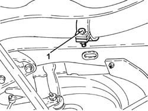
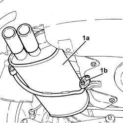
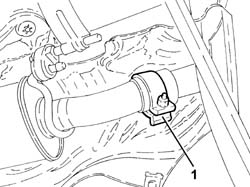

1076B22 REAR EXHAUST SILENCER - R+R EMISSION CONTROL VERSIONS
- Path
- Procedures > 10 ENGINE UNIT > 1076 EXHAUST PIPES AND SILENCERS > 1076B EXHAUST PIPES AND SILENCERS > 1076B22 REAR EXHAUST SILENCER - R+R EMISSION CONTROL VERSIONS
- Kind
- repair procedure (removal / refitting; the operation number is the code)
- Applies to
- engines: 1.8 T.SPARK, 3.2 V6; all production periods
- Interactive page
- https://sloeber94.github.io/elrnDB-aGt/en/#/125001102
Applies to: engines: 3.2 V6; all production periods
 Removing
Removing
 Refitting
RefittingPosition the vehicle on a lift.
1. Loosen the collar securing the rear exhaust silencer collar to the intermediate exhaust silencer.

Applies to: engines: 3.2 V6; all production periods
1. Remove the rear exhaust silencer (1a) after releasing from flexible mounts (1b) and the intermediate exhaust silencer.

Applies to: engines: 3.2 V6; all production periods
Refitting
RemovingRefit the rear exhaust silencer in its seat, connect to the intermediate exhaust silencer and secure with the flexible couplings.
Tighten the collar securing the intermediate exhaust silencer to the rear exhaust silencer.
Remove the vehicle from the lift.
Applies to: engines: 1.8 T.SPARK; all production periods
Removing
RefittingPosition the vehicle on a lift.
1. Tighten the collar securing the intermediate exhaust silencer to the rear exhaust silencer.

Applies to: engines: 1.8 T.SPARK; all production periods
1. Remove the rear exhaust silencer after releasing it from the flexible mounts and the intermediate exhaust silencer.

Applies to: engines: 1.8 T.SPARK; all production periods
Refitting
RemovingRefit the rear exhaust silencer in its seat, connect to the intermediate exhaust silencer and secure with the flexible couplings.
Tighten the collar securing the intermediate exhaust silencer to the rear exhaust silencer.
Remove the vehicle from the lift.